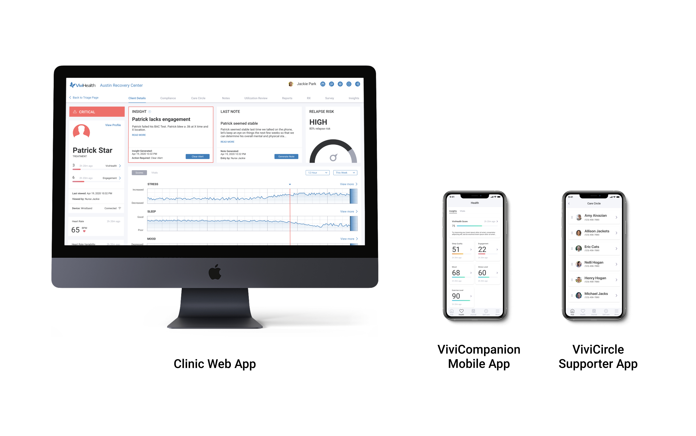

The Brief
This case study will cover the support we provided for
the ViviCompanion Mobile App. The objective of this app was to
improve accountability for people recovering from addiction. The app records data like mood, heart
rate, and sleep via a
wearable device . It would also request BAC tests via a USB breathalyzer. All collected data would
be fed into the
ViviHealth algorithm to provide the doctor with the information to better support the person in
recovery. This would
then make recommendations for the patient on how to continue their Sobriety Journey.


Editing Supporters Flow
Patients can manage the people that are their supporters
right through the app. They can re-order, remove and save the
changes they have made as shown in the edit flow above.

Account Verification Flow
Account creation and verification is a crucial part of
ViviHealth App. Since privacy is of utmost importance, it was
necessary to have a proper verification of the new accounts through code verification.